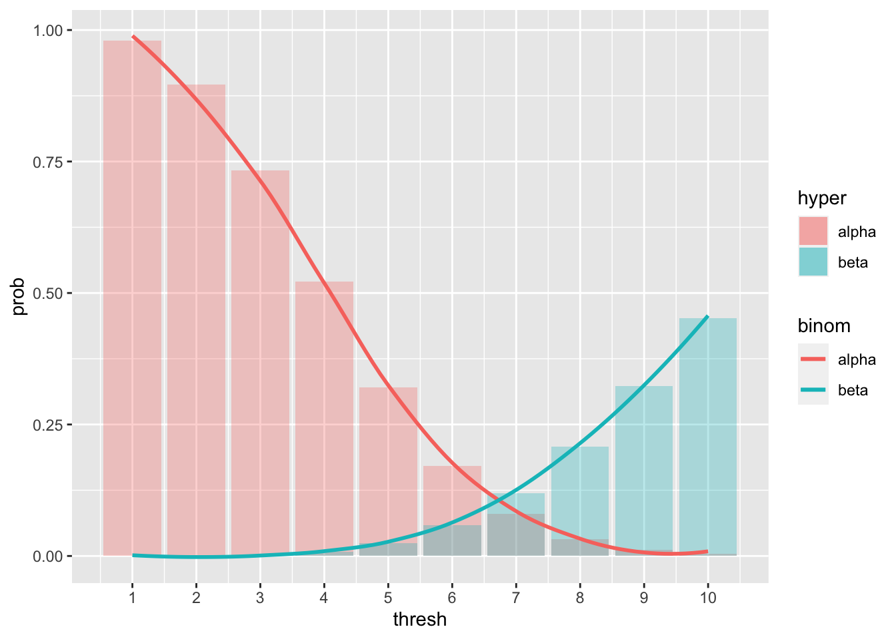
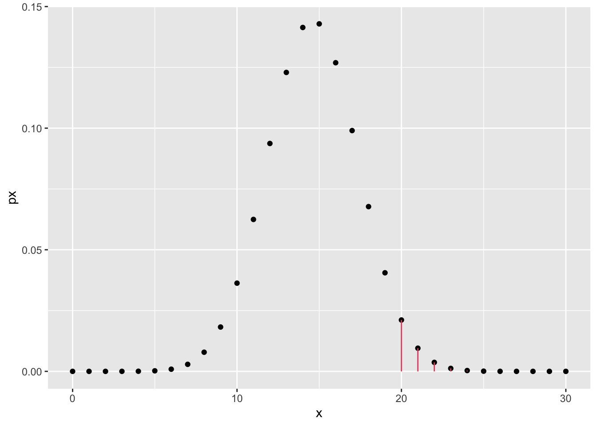

Chapter 2 Some elementary statistics problems
In the following paragraphs, we will see some applications of the R software to solve elementary statistics problems.
2.1 Hypothesis testing
2.1.1 Example
The rector of Politecnico di Torino wants to monitor the spread of Covid-19 virus inside the university, to check whether it is in line with the overall diffusion on the Italian territory, or whether it is higher, and therefore requires extra safety measures.
Tests are made on a sample of \(n = 250\) students out of the total \(N = 5000\) students (because of whatever reasons, such as economic or sustainability concerns). We assume that the tests are perfect, meaning that they have \(100\%\) sensitivity (true positive rate) and specificity (true negative rate).
We know that \(p_0 = 0.015\) is the prevalence of the virus in the Italian population at the end of 2021, and we are given a warning threshold for the prevalence of \(p_1 = 0.04\), above which the rector will have reasons to adopt more restrictive measures.
2.1.2 False alarm
Question: given a threshold \(x_0\) of positive tests, what are the false alarm and the false non-alarm probabilities?
Formally, a false alarm (type I error) probability is defined as the probability of the r.v. counting the positive tests \(X\) being greater than or equal to the threshold \(x_0\), conditioned on the fact that the prevalence is not different than the Italian reference value \(p_0\). I.e.
\[ P(X \geq x_0 | p = p_0) \] Recall that \(X \sim \text{Hypergeometric}(N, K, n)\) where \(p = K/N\).
The pmf is the following
\[ P(X = x) = \frac{\binom{K}{x}\binom{N - K}{n - x}}{\binom{N}{n}}\,, \] which leads to the false alarm probability computation
\[ P(X \geq x_0 | p = p_0) = \sum_{k = x_0}^{n}P(X = k) = \sum_{k = x_0}^{n}\frac{\binom{K}{k} \binom{N - K}{n - k}}{\binom{N}{n}}\,. \]
When \(N\) is large enough and \(p\) small enough, we can use the Binomial approximation. To be clear, with such approximation, we assume that while sampling from the population, the proportion of positives stays the same (which in our case it is safe to assume).
Therefore we approximate the false alarm probability with
\[ P(X \geq x_0 | p = p_0) = \alpha \approx \sum_{k = x_0}^{n}{\binom{n}{k}}p^{k}(1-p)^{n-k}\,. \]
Similarly, we compute the false non-alarm probability (type II error), defined as the probability of the r.v. counting the positive tests \(X\) being lower than the threshold \(x_0\), conditioned on the fact that the prevalence is the one we identified as worrying, i.e. \(p = p_1\).
\[ P(X < x_0 | p = p_1) = \beta \approx \sum_{k = 0}^{x_0 - 1}{\binom{n}{k}}p^{k}(1-p)^{n-k}\,. \] Let’s now compute these quantities using R, for several values of \(x_0\).
# import the main libraries
library(tidyverse)# set random seed for reproducibility
set.seed(42)
# define the parameters of the test
N <- 5000
n <- 250
p0 <- .015
p1 <- .04
K0 <- floor(N * p0) # get the lower integer part in case the product is not natural
K1 <- floor(N * p1)
# false positive (check phyper params with ?phyper)
# we subtract 1 to x0 because we are looking for P(X >= x0) = 1 - P(X < x0-1), not P(X > x0)
fp_df <- tibble(x0 = 1:10,
hyp = 1 - phyper(x0 - 1, K0, N - K0, n),
bin = 1 - pbinom(x0 - 1, n, p0))
# let's view the result
fp_df## # A tibble: 10 × 3
## x0 hyp bin
## <int> <dbl> <dbl>
## 1 1 0.979 0.977
## 2 2 0.896 0.890
## 3 3 0.732 0.725
## 4 4 0.521 0.517
## 5 5 0.321 0.322
## 6 6 0.171 0.176
## 7 7 0.0795 0.0847
## 8 8 0.0325 0.0364
## 9 9 0.0118 0.0141
## 10 10 0.00382 0.00494# false negative
# again, we subtract 1: P(X < x0) = P(X <= x0-1) and pbinom(x, n, p) := P(X <= x; n, p)
fn_df <- tibble(x0 = 1:10,
hyp = phyper(x0 - 1, K1, N - K1, n),
bin = pbinom(x0 - 1, n, p1))
fn_df## # A tibble: 10 × 3
## x0 hyp bin
## <int> <dbl> <dbl>
## 1 1 0.0000283 0.0000370
## 2 2 0.000339 0.000422
## 3 3 0.00203 0.00242
## 4 4 0.00810 0.00930
## 5 5 0.0243 0.0270
## 6 6 0.0587 0.0633
## 7 7 0.119 0.125
## 8 8 0.208 0.215
## 9 9 0.322 0.328
## 10 10 0.452 0.455We observe that with \(x_0 = 8\) we have \[ \alpha = 0.033, \beta = 0.208 \] but in order to get a more complete overview, we could plot those values together
library(scales) # to define custom scale on axes# join the two dataframes
tot_df <- left_join(fp_df, fn_df,
by = "x0", suffix = c("alpha", "beta"))
tot_df %>%
ggplot() +
geom_bar(aes(x0, hypalpha, fill = "alpha"), alpha = .3, stat = "identity") +
geom_bar(aes(x0, hypbeta, fill = "beta"), alpha = .3, stat = "identity") +
geom_smooth(aes(x0, binalpha, color = "alpha"), se = FALSE) +
geom_smooth(aes(x0, binbeta, color = "beta"), se = FALSE) +
labs(x = "thresh", y = "prob", fill = "hyper", color = "binom") +
scale_x_continuous(breaks = pretty_breaks(10)) # print integers on the x axis## `geom_smooth()` using method = 'loess' and formula 'y ~ x'
## `geom_smooth()` using method = 'loess' and formula 'y ~ x' The plot suggests that a good compromise could also be \(x_0 = 7\), but there is no rule in choosing such threshold, and in fact, we might be more interested in a safer threshold in terms of lower false alarm probability, or lower false non-alarm probability.
This decision process can be thought as two simple hypotheses test: we consider the null hypothesis \(H_0: p = p_0\). Given our observation, i.e. \(x\), count of positive tests, realization of the \(X\) r.v.
- if \(x < x_0\) we have no reasons to reject \(H_0\)
- if \(x \geq x_0\) we reject \(H_0\) and accept the alternative hypothesis
2.1.3 The Binomial approximation
Exercise: The plot above shows that the Binomial distribution offers indeed a good approximation of the Hypergeometric. However, as an exercise, we can repeat the experiment changing the values of \(N\) and \(p\).
repeat the computations above tweaking the parameters and observe the resulting plot. With which parameters do you observe a poor approximation of the Hypergeometric with the Binomial distribution? Feel free to plot different quantities, such as the density instead of the cumulative distribution
2.2 Confidence intervals
In case we have two samples \(\mathbf{X} = X_1, ..., X_m\) and \(\mathbf{Y} = Y_1, ..., Y_n\) coming from two unknown Normal distributions, we might want to test whether they come from distributions with same mean, or in other words, whether they are both scattered around a common value. For example, we could be interested in checking whether a set of jewelry items, which have some variability in weight, has been produced in the same original factory or if it is counterfeit.
After defining a confidence level \(1-\alpha\) and a variable that we want to limit with some “confidence”, we can compute the confidence interval \((\Delta_l, \Delta_u)\). The confidence interval tells us where the real value of the variable of interest can fall, with some confidence given the evidence. The higher is the confidence that we want to enforce, the larger the interval will be, but remember that a wide confidence interval is often not useful.
2.2.1 Example
Let’s start with a simple example, where we have two normal samples, of which we know nothing (not the mean, nor the variance):
\[ X_1, ..., X_m \stackrel{\text{i.i.d.}}{\sim} \mathcal N (\mu_x, \sigma_x^2)\,,\quad Y_1, ..., Y_n \stackrel{\text{i.i.d.}}{\sim} \mathcal N (\mu_y, \sigma_y^2) \] The goal is to get a confidence interval for the variable \(\mu_x - \mu_y\), therefore an interval in which we can expect the two means difference to be with confidence \(1 - \alpha\). Assuming equal variance in the two samples and both \(n, m\) sufficiently large, the CI is computed as
\[ \bar{\mathbf{x}} - \bar{\mathbf{y}} \pm z_{\alpha/2}\sqrt{\frac{s_x^2}{m} + \frac{s_y^2}{n}}\,. \]
Let’s simulate some data and use R to get the confidence interval, using as paramters \(\mu_x = 10, \sigma_x^2 = 36\) and \(\mu_y = 10, \sigma_y^2 = 49\). We draw \(m = 100\) and \(n = 120\) samples respectively.
# set the parameters
m <- 100
mu_x <- 10
sigma_x <- 6
n <- 120
mu_y <- 10
sigma_y <- 7
# use rnorm to draw independent and identically distributed samples
x <- rnorm(m, mu_x, sigma_x)
y <- rnorm(n, mu_y, sigma_y)At this point we can define the confidence level and compute the CI.
alpha <- 0.05 # typical value for alpha
# define a custom function based on the formula above
confidence_interval <- function(x, y, alpha) {
# note that mean() is the sample mean
dev <- mean(x) - mean(y)
# var() is the sample variance, not the actual variance
delta <- qnorm(1 - alpha/2) * sqrt(var(x) / m + var(y) / n)
return(c(dev - delta, dev + delta))
}
confidence_interval(x, y, alpha)## [1] -0.859210 2.540521We notice that the interval contains the value 0, and this is due to the fact that both samples have same mean, therefore the sample means will also be, with enough samples, very similar, thus with zero (or close to zero) difference.
2.2.2 The four cases
To better clarify, we can divide the confidence intervals over two samples in four cases:
- we know the variances of the two samples, \(\sigma_x^2, \sigma_y^2\),
- we don’t know the variances, but the samples sizes are large enough,
- we don’t know the variances and we cannot assume large sample size, but we assume homoscedasticity (equal variances),
- we don’t know the variances, samples size is not large and homoscedasticity cannot be assumed.
2.2.2.1 Case 1
The variable of interest is, just like in any of the following cases, \(\mu_x - \mu_y\), which we don’t know.
What we do know, given normality of the samples and from some background theory, is that
\[ \overline{\mathbf X} - \overline{\mathbf Y}\sim \mathcal N(\mu_x - \mu_y, \frac{\sigma_x^2}{m} + \frac{\sigma_y^2}{n})\,. \] Normalizing, we get
\[ \frac{\overline{\mathbf X} - \overline{\mathbf Y} - (\mu_x - \mu_y)}{\sqrt{\frac{\sigma_x^2}{m} + \frac{\sigma_y^2}{n}}}\sim \mathcal N(0, 1)\,, \] and thus, to get a confidence interval, we simply write the coverage probability
\[ P(- z_{\alpha/2} < \frac{\overline{\mathbf X} - \overline{\mathbf Y} - (\mu_x - \mu_y)}{\sqrt{\frac{\sigma_x^2}{m} + \frac{\sigma_y^2}{n}}} < z_{\alpha/2} ; \mu_x, \mu_y) \equiv 1 - \alpha \] and rearranging the terms we find the confidence interval for \(\mu_x - \mu_y\) in case 1:
\[ \left( \overline{\mathbf X} - \overline{\mathbf Y} - z_{\alpha/2} \sqrt{\frac{\sigma_x^2}{m} + \frac{\sigma_y^2}{n}}, \overline{\mathbf X} - \overline{\mathbf Y} + z_{\alpha/2} \sqrt{\frac{\sigma_x^2}{m} + \frac{\sigma_y^2}{n}}\right) \]
2.2.2.2 Case 2
If \(m, n\) are “large”, then the sample variance will asymptotically get closer to the variance. In the previous example we assumed large sample size, that’s why we simply replaced \(\sigma\) with \(s\) in the above formula.
The interval \[ \bar{\mathbf{x}} - \bar{\mathbf{y}} \pm z_{\alpha/2}\sqrt{\frac{s_x^2}{m} + \frac{s_y^2}{n}}\,. \] is a confidence interval for \(\mu_x - \mu_y\) with approximately level \(1-\alpha\).
2.2.2.3 Case 3
In case we assume homoscedasticity, we leverage on the observation as much as we can, therefore we compute a weighted average (pooled) of the sample variances and we use that estimator to approximate the common variance.
\[ s_p^2 = \frac{(m - 1) s_x^2 + (n - 1) s_y^2}{m + n - 2}\,. \] One can prove that the r.v \(\frac{(m + n - 2) s_p^2}{\sigma^2} \sim \chi^2(m + n - 2)\) and from that follows
\[ \frac{\overline{\mathbf X} - \overline{\mathbf Y} - (\mu_x - \mu_y)}{\sqrt{s_p^2 \left( \frac{1}{m} + \frac{1}{n}\right)}} \sim t(m + n - 2)\,, \] Where \(t(d)\) is a T-student distribution with \(d\) degrees of freedom and, compared to a standard Normal distribution, has larger tails, which means that the quantiles over small values such as \(\alpha\) will be higher wrt the std normal.
x_dt <- seq(- 5, 5, by = 0.01)
norm_t_df <- tibble(x = x_dt, p_dt = dt(x, df = 3), p_nt = dnorm(x))
norm_t_df %>%
ggplot() +
geom_line(aes(x, p_dt, color = "t-stud")) +
geom_line(aes(x, p_nt, color = "norm")) +
labs(title = "T-student with df = 3 and Std Normal comparison",
x = "x", y = "p(x)")Following the same approach of the previous cases, the confidence interval is found using the quantiles of the specific T-student distributions.
Before we computed the CI “manually”, but luckily there exists a function which already implements this formula (and not only this):
# set var.equal = TRUE for pooled variance
test_obj <- t.test(x, y, conf.level = 1 - alpha, var.equal = TRUE)
test_obj # outputs some information##
## Two Sample t-test
##
## data: x and y
## t = 0.9646, df = 218, p-value = 0.3358
## alternative hypothesis: true difference in means is not equal to 0
## 95 percent confidence interval:
## -0.8770073 2.5583183
## sample estimates:
## mean of x mean of y
## 10.195089 9.354433test_obj$conf.int # we're interested in the confidence interval## [1] -0.8770073 2.5583183
## attr(,"conf.level")
## [1] 0.952.2.2.4 Case 4
Otherwise, in case we cannot assume that the two samples have the same variance.
In R this specific confidence interval can be computed setting the var.equal
flag to false in t.test().
# or leaving it to default = F
t.test(x, y, var.equal = FALSE) # conf.level = 0.95 by default##
## Welch Two Sample t-test
##
## data: x and y
## t = 0.96929, df = 214.36, p-value = 0.3335
## alternative hypothesis: true difference in means is not equal to 0
## 95 percent confidence interval:
## -0.8688616 2.5501726
## sample estimates:
## mean of x mean of y
## 10.195089 9.354433This is called the Welch-Satterthwaite approximation.
2.3 P-value
In the context of hypothesis testing, the p-value is the probability, under the null hypothesis, that we obtain a test statistic at least as contradictory to \(H_0\) as the statistic from the available sample. In other words, it’s a measure of the null hypothesis support in a 0 to 1 range.
2.3.1 Example
In a fair French roulette, the red probability is 18/37.
we observe 20 reds out of 30. Compute the p-value of the null hypothesis of the roulette being fair, with respect to the alternative hypothesis of the roulette being skewed towards the red,
in the same situation, compute the p-value of the null hypothesis of the roulette being fair wrt the alternative hypothesis of it not being fair,
repeat a. and b. with 200 reds out of 380 as outcome.
Given \(X = \#\text{reds}\), we can compute the following probability under the null hypothesis, noticing that \(X \sim \text{Binomial}(n, p)\) with \(n = 30\):
\[ P(X \geq 20 | H_0) = \sum_{k = 20}^{30} {30 \choose k} \left(\frac{18}{37}\right)^k\left(\frac{19}{37}\right)^{(30-k)} \] Note that we specify the condition \(\geq 20\) as the p-value stands for the probability of observing an outcome at least as contradictory as the one observed.
In R, we can compute it “by hand”:
p0 = 18/37
n = 30
# P(X > 19) \equiv P(X >= 20)
pbinom(19, n, p0, lower.tail = FALSE) # notice the lower.tail flag## [1] 0.03598703or use the Binomial test function
# check how it works
?binom.testbin_test <- binom.test(20, n, p0, alternative = "greater")
bin_test##
## Exact binomial test
##
## data: 20 and n
## number of successes = 20, number of trials = 30, p-value = 0.03599
## alternative hypothesis: true probability of success is greater than 0.4864865
## 95 percent confidence interval:
## 0.5005613 1.0000000
## sample estimates:
## probability of success
## 0.6666667bin_test$p.value## [1] 0.03598703# sketch of "greater" type p-value
sketch_df <- tibble(x = 0:n, px = dbinom(x, n, p0))
sketch_df %>%
ggplot() +
geom_point(aes(x, px)) +
geom_segment(data = . %>% dplyr::filter(x >= 20),
aes(x = x, xend = x, y = 0, yend = px), color = 2)
- If the alternative hypothesis is just \(H_1: p \neq 18/37\) then the contradiction can happen both on the left and on the right side of the curve, i.e. the roulette favors the red or the roulette favors the black. Therefore we have to sum the two probabilities:
\[
P(X \geq 20 | H_0) + P(X < 10 | H_0)\,.
\]
We compute this quantity first using pbinom as before
pbinom(19, n, p0, lower.tail = FALSE) + pbinom(9, n, p0) ## [1] 0.06614782and then using the test function
bin_test_2 <- binom.test(20, n, p0, alternative = "two.sided")
bin_test_2##
## Exact binomial test
##
## data: 20 and n
## number of successes = 20, number of trials = 30, p-value = 0.06615
## alternative hypothesis: true probability of success is not equal to 0.4864865
## 95 percent confidence interval:
## 0.4718800 0.8271258
## sample estimates:
## probability of success
## 0.6666667bin_test_2$p.value## [1] 0.06614782# sketch of bilateral type p-value
sketch_df <- tibble(x = 0:n, px = dbinom(x, n, p0))
sketch_df %>%
ggplot() +
geom_point(aes(x, px)) +
geom_segment(data = . %>% dplyr::filter(x >= 20),
aes(x = x, xend = x, y = 0, yend = px), color = 2) +
geom_segment(data = . %>% dplyr::filter(x < 10),
aes(x = x, xend = x, y = 0, yend = px), color = 3)- When \(n\) increases, and we can consider it large enough, we can use the normal approximation of the binomial (for the CLT), i.e.
\[ Z = \frac{X - np}{\sqrt{np(1-p)}} \stackrel{n\rightarrow +\infty}{\approx} \mathcal N(0,1)\,. \] Under the null hypothesis, in the unilateral case, we compute the p-value as
\[ P(Z \geq z | H_0) = 1 - \Phi(z)\,, \] where \(z\) is the realization of \(Z\) given that the realization of \(X\) is \(x = 20\).
In R:
n <- 380
z <- (200 - n * p0)/sqrt(n * p0 * (1-p0))
pnorm(z, lower.tail = FALSE)## [1] 0.06016385or, using the R proportion test prop.test
?prop.testprop.test(200, n, p = p0) # uses continuity correction##
## 1-sample proportions test with continuity correction
##
## data: 200 out of n, null probability p0
## X-squared = 2.2562, df = 1, p-value = 0.1331
## alternative hypothesis: true p is not equal to 0.4864865
## 95 percent confidence interval:
## 0.4747919 0.5772992
## sample estimates:
## p
## 0.5263158Notice that the result is not exactly the same. This is due to the fact
that we are approximating a discrete probability sum with an integral of
a Gaussian. To correct for this, it’s enough to subtract (or add, depending
on the case) .5 to the \(x\) value.
z_corr <- (200 - .5 - n * p0)/sqrt(n * p0 * (1-p0))
pnorm(z_corr, lower.tail = FALSE)## [1] 0.06653798The bilateral case with Normal approximation is left to the reader as exercise